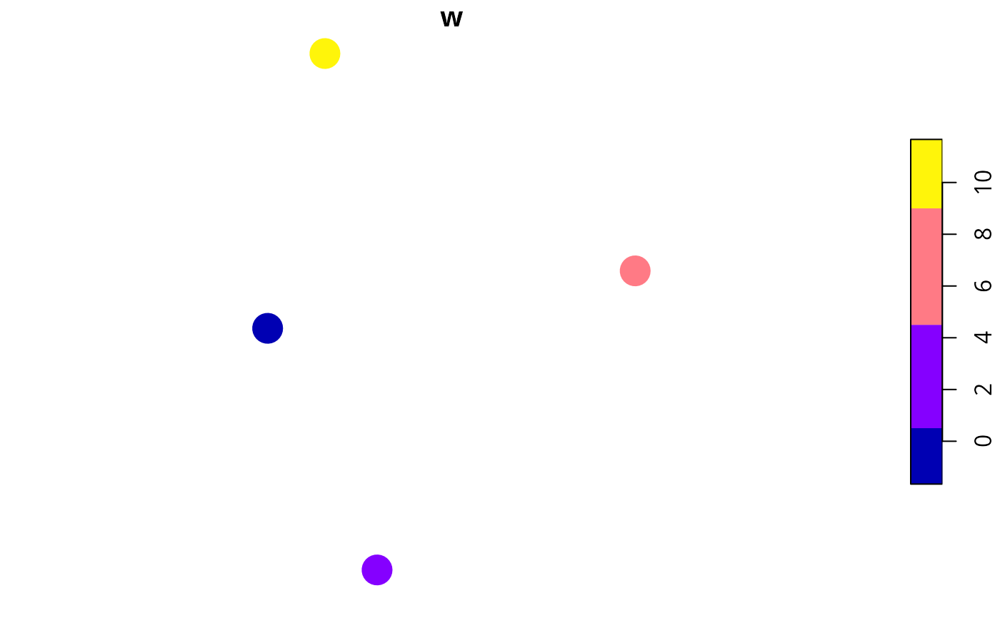

Generate a survey scheme by selecting the set of sites with the greatest overall weight value, a maximum budget for the survey scheme.
Usage
weighted_survey_scheme(
site_data,
cost_column,
survey_budget,
weight_column,
locked_in_column = NULL,
locked_out_column = NULL,
solver = "auto",
verbose = FALSE
)Arguments
- site_data
sf::sf()object containing the candidate survey sites.- cost_column
charactername of the column in the argument to the argument tosite_datathat contains the cost for surveying each site. No missing (NA) values are permitted.- survey_budget
numericvector of maximum budgets for the survey schemes. No missing (NA) values are permitted.- weight_column
charactername of the column in the argument tosite_datawith the weights for each site.- locked_in_column
character(optional) name of the column in the argument tosite_datathat containslogical(TRUE/FALSE) values indicating if certain sites should be locked into the survey scheme. No missing (NA) values are permitted. Defaults toNULLsuch that no sites are locked in.- locked_out_column
character(optional) name of the column in the argument tosite_datathat containslogical(TRUE/FALSE) values indicating if certain sites should be locked out of the survey scheme. No missing (NA) values are permitted. Defaults toNULLsuch that no sites are locked out.- solver
charactername of the optimization solver to use for generating survey schemes. Available options include:"Rsymphony","gurobi"and"auto". The"auto"method will use the Gurobi optimization software if it is available; otherwise, it will use the SYMPHONY software via the Rsymphony package. Defaults to"auto".- verbose
logicalindicating if information should be printed while generating survey scheme(s). Defaults toFALSE.
Value
A matrix of logical (TRUE/ FALSE)
values indicating if a site is selected in a scheme or not. Columns
correspond to sites, and rows correspond to different schemes.
Details
Let \(J\) denote the set of sites (indexed by \(j\)), and let \(b\) denote the maximum budget available for surveying the sites. Next, let \(c_j\) represent the cost of surveying each site \(j \in J\), and \(w_j\) denote the relative value (weight) for surveying each site \(j \in J\). The set of sites with the greatest overall weight values, subject to a given budget can the be identified by solving the following integer programming problem. Here, \(x_j\) is the binary decision variable indicating each if site is selected in the survey scheme or not.
$$\mathit{Maximize} \space \sum_{j \in J} x_j w_i \\ \mathit{subject \space to} \\ \sum_{j \in J} x_j c_j \leq b$$
Solver
This function can use the Rsymphony package and the Gurobi optimization software to generate survey schemes. Although the Rsymphony package is easier to install because it is freely available on the The Comprehensive R Archive Network (CRAN), it is strongly recommended to install the Gurobi optimization software and the gurobi R package because it can generate survey schemes much faster. Note that special academic licenses are available at no cost. Installation instructions are available online for Linux, Windows, and Mac OS operating systems.
Examples
# set seed for reproducibility
set.seed(123)
# simulate data
x <- sf::st_as_sf(
tibble::tibble(x = rnorm(4), y = rnorm(4),
w = c(0.01, 10, 8, 1),
cost = c(1, 1, 1, 1)),
coords = c("x", "y"))
# plot site' locations and color by weight values
plot(x[, "w"], pch = 16, cex = 3)

# generate scheme without any sites locked in
s <- weighted_survey_scheme(x, cost_column = "cost", survey_budget = 2,
weight_column = "w")
# print solution
print(s)
#> [,1] [,2] [,3] [,4]
#> [1,] FALSE TRUE TRUE FALSE
# plot solution
x$s <- c(s)
plot(x[, "s"], pch = 16, cex = 3)